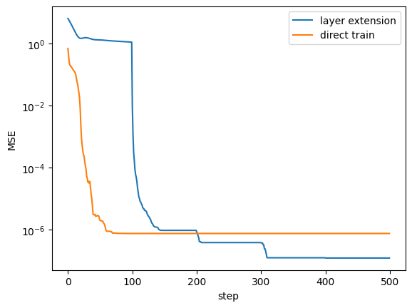

Layer Extension
In this example, we will demonstrate how to extend layers in data re-uploading circuits and making a more powerful DARUAN in QKAN.
[1]:
import matplotlib.pyplot as plt
import torch
from qkan import QKAN, create_dataset
device = "cuda" if torch.cuda.is_available() else "cpu"
# f(x,y) = exp(sin(pi*x)+y^2)
f = lambda x: torch.exp(torch.sin(torch.pi * x[:, [0]]) + x[:, [1]] ** 2)
dataset = create_dataset(f, n_var=2, device=device)
# initialize QKAN with r=1
model = QKAN(
[2, 5, 1],
reps=1,
device=device,
preact_trainable=True, # enable flexible fourier frequency
postact_bias_trainable=True, # extend output bound
postact_weight_trainable=True, # extend output bound
ba_trainable=True, # enable residual connection for better convergence
)
optimizer = torch.optim.Adam(model.parameters(), lr=5e-3)
[2]:
test_results = []
qkans = [model] # save the model
[3]:
result = model.train_(dataset, optimizer=optimizer, steps=100)
test_results += result["test_loss"]
100%|█████████████████| 100/100 [00:00<00:00, 181.69it/s, train loss=1.0124128, test loss=1.1017513]
Do layer extension to get a fine-grained model.
[4]:
reps = [5 * i for i in range(1, 5)]
for idx, r in enumerate(reps):
qkans.append(
QKAN(
[2, 5, 1],
reps=r,
device=device,
preact_trainable=True,
postact_bias_trainable=True,
postact_weight_trainable=True,
ba_trainable=True,
)
)
qkans[-1].initialize_from_another_model(qkans[idx])
optimizer = torch.optim.LBFGS(qkans[-1].parameters(), lr=5e-1)
result = qkans[-1].train_(dataset, optimizer=optimizer, steps=100)
test_results += result["test_loss"]
100%|███████████| 100/100 [00:09<00:00, 10.89it/s, train loss=8.0940447e-07, test loss=9.647775e-07]
100%|███████████| 100/100 [00:03<00:00, 27.13it/s, train loss=3.3596322e-07, test loss=3.903716e-07]
100%|███████████| 100/100 [00:05<00:00, 19.77it/s, train loss=9.609832e-08, test loss=1.2657244e-07]
100%|████████████| 100/100 [00:03<00:00, 28.59it/s, train loss=9.314607e-08, test loss=1.240494e-07]
Compare to directly train a large number of repetitions.
[5]:
model = QKAN(
[2, 5, 1],
reps=20,
device=device,
preact_trainable=True,
postact_bias_trainable=True,
postact_weight_trainable=True,
ba_trainable=True,
)
optimizer = torch.optim.LBFGS(model.parameters(), lr=5e-1)
result = model.train_(dataset, optimizer=optimizer, steps=500)
100%|███████████| 500/500 [00:49<00:00, 10.07it/s, train loss=4.4905502e-07, test loss=7.657976e-07]
[6]:
plt.plot(test_results, label="layer extension")
plt.plot(result["test_loss"], label="direct train")
plt.ylabel("MSE")
plt.xlabel("step")
plt.yscale("log")
plt.legend()
[6]:
<matplotlib.legend.Legend at 0x7958f5e0f190>

With layer extension, the model achieves better loss performance while requiring less training time, enabling efficient scalability without sacrificing accuracy.